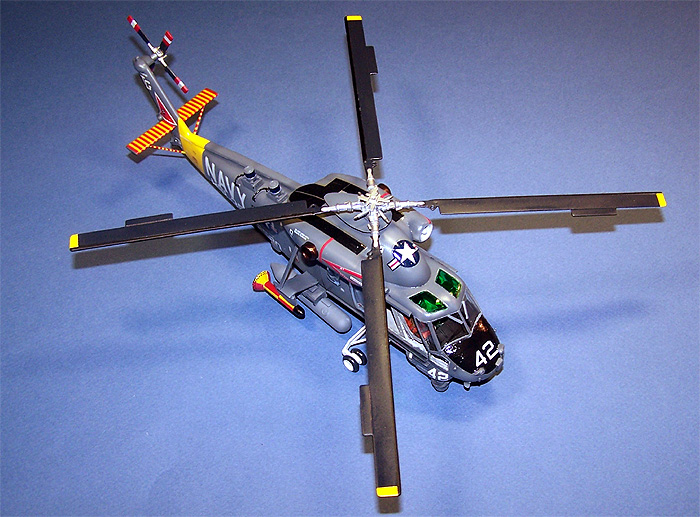

Revell 1/48 Kaman SH-2F Seasprite
Kit #4823
Collector�s Market Value $22.00
Images and text Copyright � 2007 by Matt Swan
Developmental Background
The Kaman Aircraft Company developed the HU2K-1 in 1959 as a single engine light utility helicopter for Naval use. In 1962 this type was put into service and saw several airframe and equipment upgrades over the next ten years including the addition of a second engine. In 1972 this airframe was selected for development in the LAMPS (Light Airborne Multi-purpose System) program for the Antisubmarine Warfare arm of the Navy. With the addition of these new electronics and new mission profile the type was redesignated SH-2D. All older HU-2�s were retooled for this configuration and by 1980 Kaman was producing new models, the SH-2F.
The final production procurement of the Seasprite was in 1986 and the type was retired from use in US service in 1993. During its service life final variants performed during Operation Desert Storm in 1991. The type continued in service with the Navy Reserve until 2001. It is still in service in Australia, Egypt, New Zealand and Poland. In 2007 the SG-2G(A) Super Seasprite was still being produced for the Royal Australian Navy however Kaman announced in the same year that production would most likely be halted in the same year.
The Kit
In 1986 Matchbox released this kit under their own logo and shortly after that Revell of Germany leased the molds and began production under their own nametag. The kit holds true to the older philosophy of raised panel lines and minimal interior details. The parts trees are free of flash and have fine mold separation lines. There are no evident sink marks on the parts and the main pieces fit together well. The thought process of assembly is good and means little filler will be required. The kit includes three crew figures but the level of detail on these is low at best. The clear parts display good clarity and raised frame lines where appropriate. They turn out very nice when dipped in Future floor polish. The plastic pieces are done in a light gray high pressure injection molded material with part numbers stamped right into the sprues rather than on small tabs like we usually see on high production kits. Normally right about this point you would expect me to lay out several images of the parts trees but that�s not going to happen this time around and if you read on it will become clear as to why.
Kit Construction
I first purchased this kit back in 1991, right after it was released by Revell of Germany. Now I am not normally a helo guy but more of the WW2 airplane kind of modeler. This one caught my eye and I figured it would be good to model outside my comfort zone once in a while. Back in 1991 I was not paying a whole lot of attention to precision historical reproduction either but more modeling stuff as I would like it to look. Unfortunately I was into some recreational activities in those days that influenced my creativity in some unusual manners. In those days my unbuilt model stash consisted of about six kits (due to financial constraints caused by said recreational activities). So there I was, young, foolish and somewhat fuzzy when I picked this kit up and jumped right into building it. Things started off pretty good, the basic fuselage came together and the interior went up just fine (mostly because there was not much to it. All the interior details on various instrument panels were achieved with decals � no raised instrument details at all. Seats were very basic and flight controls were also basic at best. For some now unknown reason (part of that fuzzy thing I think) I painted the fuselage a dark green. This went on for only a few days when I decided this was not going in any direction that I liked and I was better of building airplanes. The whole kit and caboodle went back in the box and got stuff in a closet corner to be forgotten as a bad idea.
Time passes, kids are growing up, model skills are improving, lifestyle is getting much more healthy (the fuzziness dissipates), modeling takes on a larger part of my life and a dedicated modeling room is created � life is good. Now I start to gather my various kits from their assorted hiding places and organize them along with an Excel spreadsheet. Out from a dark corner emerges this old, dusty Seasprite box. I look inside and think �what the hell was I thinking?� Now I have been building a lot of airplanes for a few years and figure maybe I can do something with this old thing. Heading to the computer to check some references I come across a detail company called Cobra Company and they have not one but two detail sets for this very same kit! The first set is a great looking interior set with detailed instrument panel and a full electronics office � a hell of a lot better than what came with the kit. The second package is an exterior set that updates the helicopter to when the Navy was putting all those exterior bumps on it. All this looks good and I just got a tax refund that was burning a hole in my pocket so I ordered both sets of course.
While I was waiting for those sets to arrive I carefully opened up the fuselage and considered just what I was going to have to do to resurrect this kit. Fortunately the paint I had put on so many years ago had gone down smoothly so there were no big runs or drips to deal with, it looked like all I was going to have to do was a little seam work and just paint over the fuselage. The interior was another matter. I had glued everything together with that old orange tube glue from Testors and had spared no expense with the glue � yes, I had used a lot of it. The image at left shows you exactly what I was starting with for an interior. Normally I would not allow anyone to see this kind of modeling and claim it as mine. After a lot of careful chipping and prying I had all the original parts removed from the floor pan leaving only the mounting support for the electronics officer. Now things could start moving forward. The resin detail pieces were removed from the various pour blocks and washed with warm soapy water to remove any mold release agent. There was no excess flash to deal with and no micro bubbles. Cobra Company had done a very good job with these pieces.
The seat cushions were done in orange, the seat harnesses were detailed and the forward bulkhead was attached to the floorpan. The floorpan as a whole was painted with a very light gray enamel. Now I could test place my new interior pieces and begin to get a feel for this kit. The original kit did not include any foot pedals but the Cobra set did and all I had to do was cut some short lengths of copper wire to add to them. Instrument panels were done with black and electronics racks were done with medium gray. Instrument details were done with various colors of enamels and face details were supplied with decals cut from a Reheat sheet using a Waldron punch set. The following four pictures show the progression of the new cockpit interior less the main instrument panel.
The instrument panel does not get placed until after the fuselage is assembled. The Cobra exterior set includes a replacement nose section so I removed the existing kit nose, sanded it flat and dry fit the new nose cone. As the restoration progressed I installed the interior and assembled the fuselage once again. The Cobra set includes some nicely done IR units for the tail boom � these were both installed and I added some twisted wire cables from them into the body of the helicopter. The kit sponsons were replaced with new resin short sponsons. The Starboard side went on just fine but I had a few fit issues with the Port unit. I had to grind away a fair amount of material from the interior of the piece before I got an acceptable fit and still needed some filler on that side. The kit external fuel tank mounts were also replaced with resin pieces from Cobra. The kit chaff and flare dispensers were replaced with smaller resin units mounted to the fuselage exterior. The large opening in the side of the fuselage was filled with a new panel cut from some stock plastic sheet as the kit part did not fit for crap.
The main IP was installed after cutting down the fairing for the kit part. I did not have any trouble installing this piece and only needed very little filler to blend it in. The front wind screen was masked off and installed along with the lower clear side panels. From here the openings were packed with damp tissue paper and the kit was ready for some primer. You may click on the images below to view larger pictures of these progress stages.
Once this was primed with Mr. Surfacer 1000 thinned 50% with lacquer thinner I then preshaded the raised panel lines with flat black. As a foot note concerning the upper clear panels above the flight crew I brush painted the insides of these with Tamiya clear green then dipped them in Future. I used Gunship Gray as my base color for the model then came back with some lightened Gunship Gray to fade the panels a bit. Fuel tanks (resin replacements) were painted separately then attached. The refueling probe was painted gloss black and kit decals were used for the yellow and read panels. Here is where the first warning signs of trouble cropped up, the decals did not want to conform to the part or respond well to any setting solutions. I tried standard Micro-Sol first then several applications of Mr. Marker Soft and still they gave me a hard time.
After the base model was sealed with Future I began to apply the kit decals. I had a terrible time with these decals, they either did not want to respond to the setting solution at all or wrinkled up and would not settle down for crap. I spent two days fighting these things and even in a couple cases hit them with Tenax 7R, that�s right � GLUE with no results!!!! If you are ever temped to build this kit find other decals � please take this advice. The red and yellow strips on the tail planes are decals, the kit provided decals for the support struts as well but after all the grief I got from the larger ones I just painted the struts with a fine brush and counted myself ahead of the game. Rotor blades were masked, painted, masked and painted again before being attached to the rotor head. Exhaust stacks were done with Model Master Burnt Iron lacquer then installed. The remaining kit decals were put in place and the kit was treated with Micro-Flat. The rotor assembly was the last piece put in place. I thought about not gluing it down to make it easier to transport should I ever want to take it to a show but after all the crap those decals gave me (I was really enjoying this up till that time) I just want to find a dark corner on the display shelving and go build an airplane.
Really though it was not that bad of a kit, I�ve built worse that much is certain. The main points for any modeler to pay attention to are first � throw away the kit decals and find something else, anything else. Second, take a look at those Cobra Company detail sets. The interior set is a MUST HAVE set and the exterior set is definitely worth considering unless you really want and older version of the helicopter.

You may click on the small images below to view larger pictures


{kind=link}
{kind=link}
{kind=link}
{kind=link}
{kind=link}
{kind=link}
{kind=link}
{kind=link}